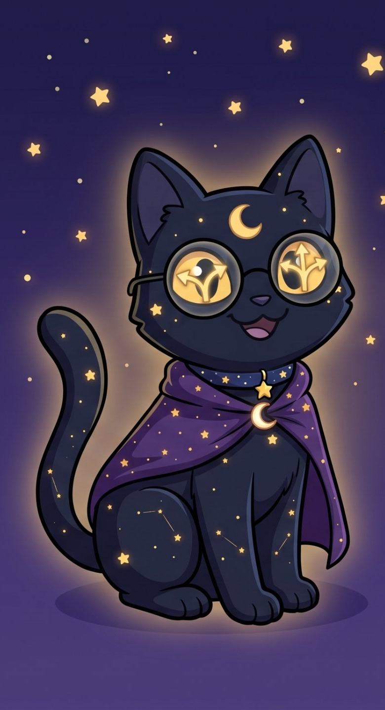

Aprenda programando o que você quer construir.
Um app que transforma o seu objetivo em uma trilha sob medida. Você aprende os fundamentos de verdade, mas já dentro do seu projeto: cada aula constrói o que você quer. O Lunox lembra o que você já sabe.

Três passos até a primeira estrela
Nada de curso genérico. O fundamento entra na hora em que o seu projeto pede.
Você diz o que quer construir
Um bot de Discord, um CRUD de alunos, um portfólio. Em uma frase.
O Lunox monta a trilha
No máximo 3 aulas, focadas apenas no que o seu projeto exige.
Teste de refino
Antes de a estrela acender, você explica o trecho, encontra um bug ou altera algo.
Usar IA está certo, desde que você saiba o que está fazendo. Por isso cada aula termina com você revisando e corrigindo o que a IA gerou.
Diga o que quer construir
Esta é a mesma lógica do app: o projeto entra, a trilha sai — e o que você já sabe é pulado.
Uma IA responde. O Lunox te ensina.
Chat de IA comum
- ✕ Esquece quem você é
- ✕ Responde só o que você pergunta
- ✕ Entrega o código pronto
- ✕ Exercícios genéricos
Lunox
- ✓ Lembra suas habilidades, com prova de cada uma
- ✓ Decide o que você precisa aprender a seguir
- ✓ Faz você escrever, usar IA e provar que entendeu
- ✓ Exercícios que são pedaços do seu projeto
Cada projeto acende novas estrelas
Clique para acender o que você já sabe. O Lunox encurta a próxima trilha a partir daí — e a pilha do que falta diminuir.
Cada habilidade vira um item
O progresso fica visível, e o seu gato conta o seu caminho — do gatinho simples ao Lunox completo.


Conversa que adapta a trilha
No modo instantâneo a resposta é roteirizada, para a demo nunca travar. Ligue a IA real para ver a cascata de modelos decidindo em tempo real.
O caminho do produto
Manual de publicação no Git
Ao concluir cada projeto grande, o app entrega um manual para publicar. Você termina com algo para mostrar.
Trilhas geradas por IA
O jeito mais rápido e barato de testar a ideia com alunos de verdade.
Trilhas com professores
O app cresce com conteúdo de especialistas, mantendo a adaptação por aluno.